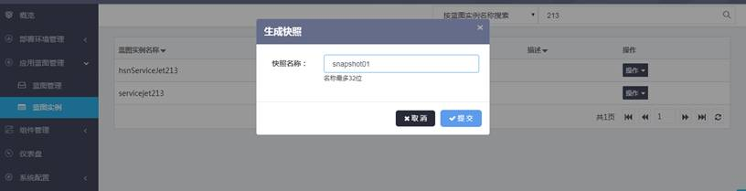

点击蓝图实例列表页的操作按钮，选择“快照”-->“生成快照”，可以创建蓝图实例的快照

在保存快照对话框中输入快照名称（快照名称有提示长度限制），点击“保存”完成蓝图实例的快照制作，快照会记录当前蓝图实例的蓝图配置和其内的所有组件配置，用于未来回滚时使用。注意，同一蓝图实例的快照不能重名，否则会重名提示
点击蓝图实例列表页的操作按钮，选择“快照”-->“查看快照”，可以查看已经创建的快照
单击“回滚”，选择已经存在的回滚过程，单击“确定”，执行蓝图实例的回滚过程。
给出提示该蓝图实例的回滚请求已发送，流程开始执行，页面直接跳转到过程监控，监控该过程是否执行成功。